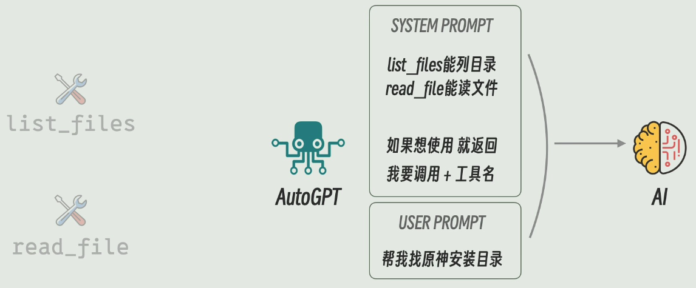
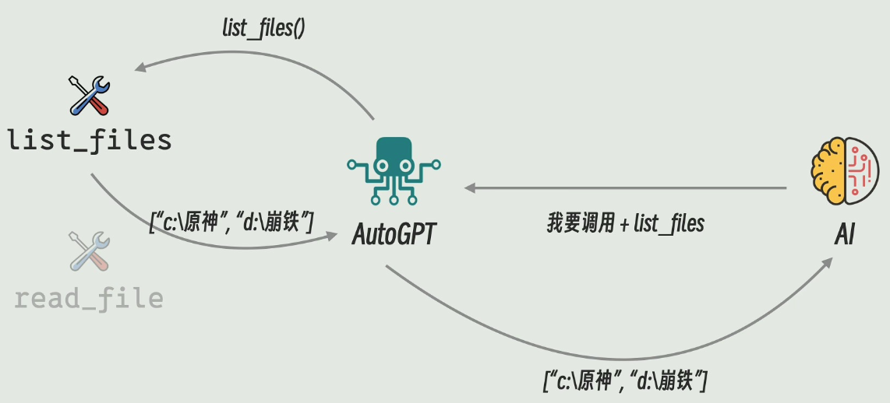
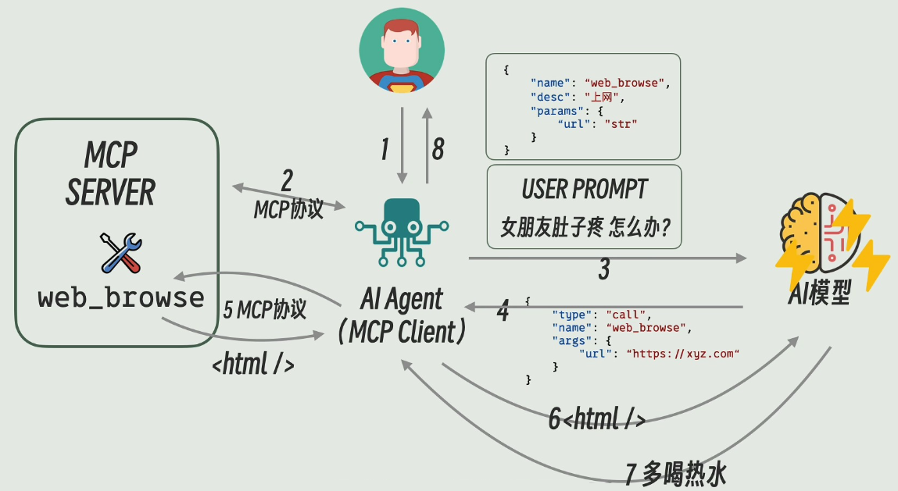

Prompt&Agent&MCP
Prompt
用户和 AI 模型进行交互时，最初是用户提供 User Prompt （理解为用户的问题），模型结合 System Prompt （理解为系统预设的前提 eg：系统以安全的模式进行回答）两者共同来回答用户的问题；
Agent
若用户期望模型可以利用本地已经写好的工具（Tools，已经写好的函数调用的形式）来自动化的完成指定的任务；eg：（两个工具 list_files 列出目录，read_file 读文件）


中间的 AutoGPT 即 AI Agent（在 Agent Tools 、模型、用户之间“传话”的工具）；
由于生成的 System Prompt 以及模型返回给 Agent 的内容格式等存在差异，模型厂商推出 Function Calling 功能，主要用来规范描述；
MCP
MCP 一个通信协议，专门用来规范 Agent 和 Tools 服务之间是怎么交互的，一些交互接口，参数格式等；
整体的基本流程：

这里的 MCP Server 可以是 Tools 也可以是数据、Prompt 模版；
学习原文：
本博客所有文章除特别声明外，均采用 CC BY-NC-SA 4.0 许可协议。转载请注明来源 Kyle's Blog！
相关文章

2025-04-11
马尔可夫链(Markov Chains)&隐马尔可夫模型(HMM)
马尔可夫链(Markov Chains)&隐马尔可夫模型(HMM)相关介绍

2025-03-09
机器学习基础&名词解释
监督学习：有标签的学习；eg：分类、回归（预测）。 无监督学习：无标签的学习；eg：聚类，将相似的内容组织分类。 半监督学习：结合监督学习和无监督学习，使用部分标记的数据。 强化学习：让模型在一个环境中采取最佳行动，获取结果的反馈，从反馈中学习；（在所给定环境中采取最佳行动来最大化奖励或最小化损失；eg：下棋）。 深度学习：机器学习的一种方法，核心在于使用人工神经网络，模仿人脑处理信息的方式。通过层次化的方法提取和表示数据的特征。 泛化：是指一个机器学习算法对于没有见过的样本的识别能力。即举一反三，学以致用的能力。 对齐：其作用就是让 LLM 与人类的价值观保持一致。 提示词工程（Prompt Engineering）：专门针对语言模型进行优化的方法。它的目标是通过设计和调整输入的提示词（prompt），来引导这些模型生成更准确、更有针对性的输出文本。 微调（fine-tune）：针对于某个任务，自己的训练数据不多，那怎么办？...